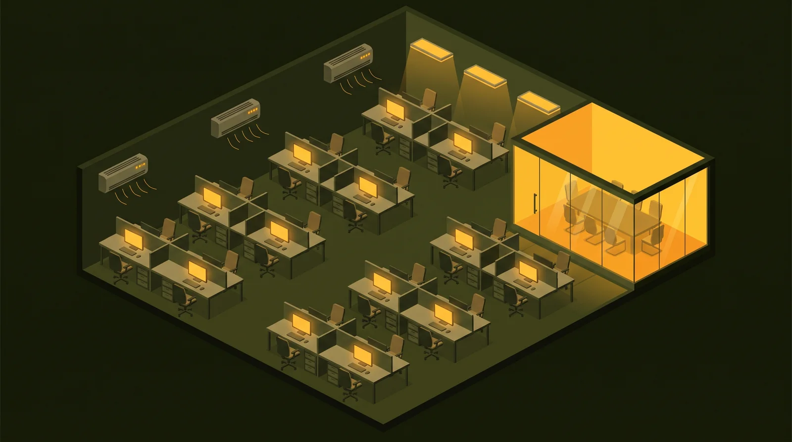
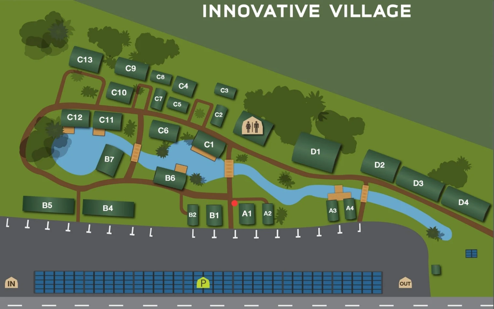
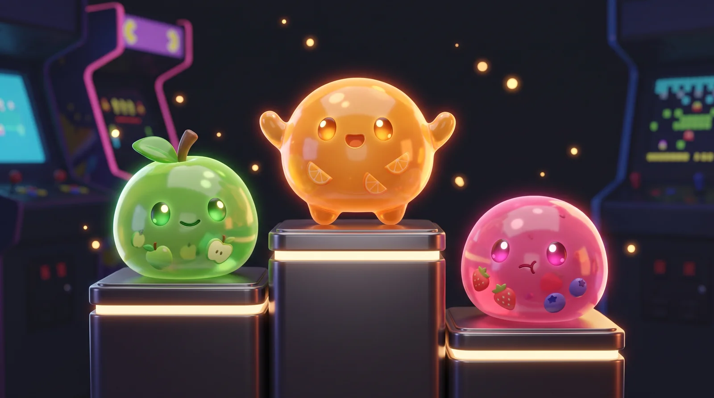

การใช้เกมมิฟิเคชันเพื่อส่งเสริมพฤติกรรมการประหยัดพลังงานไฟฟ้า
ของพนักงานในสำนักงาน
Applying Gamification to Promote Energy-Saving Behavior of Employees in the Workplace
สมาชิกกลุ่ม: ภูมิ · เอมมี่ · ___ · ___ | นำเสนอ 11 กรกฎาคม 2569

พนักงานเปิดไฟส่องสว่าง จอคอมพิวเตอร์ และเครื่องปรับอากาศทิ้งไว้ — โดยเฉพาะช่วงพักเที่ยงและหลังเลิกงาน ทำให้องค์กรสิ้นเปลืองพลังงานและค่าใช้จ่ายโดยไม่จำเป็น
| CAS Cogniser | อาคาร B3, B4 · 4 คน |
| Innergylab | อาคาร B6 · 4 คน |
| Innovative Village | อาคาร A1 · 4 คน |
| IAgency | อาคาร C10 · 3 คน |
| Kiry | อาคาร B5 · 6 คน |

หลังใช้ระบบเกมมิฟิเคชัน 2 สัปดาห์ จำนวน "จุดเปิดอุปกรณ์ทิ้งไว้โดยไม่ใช้งาน" ต่อวัน ลดลงอย่างน้อย 30% เทียบกับช่วง Baseline
ปริมาณการใช้ไฟฟ้ารายวัน (kWh) ในช่วงใช้ระบบ ต่ำกว่าช่วง Baseline
| ตัวแปรต้น | ระบบเกมมิฟิเคชัน (คะแนนทีม + leaderboard + streak) |
| ตัวแปรตาม | (1) จุดเปิดทิ้ง/วัน (2) kWh/วัน |
| วิธีวัด | Walk-through audit วันละ 2 รอบ (พักเที่ยง + หลังเลิกงาน) + จดมิเตอร์รายวัน |
| คุมตัวแปรกวน | บันทึกอุณหภูมิสูงสุดรายวัน + จำนวนคนเข้าออฟฟิศ ประกอบการวิเคราะห์ |
ศึกษา → พัฒนา → ทดสอบเปรียบเทียบ = ลำดับการดำเนินงานจริงในบทที่ 3
สุขภาพน้องอัพเดตทุกเย็นจากผลตรวจ — feedback ที่มองเห็นและผูกใจ (ต้นแบบ: Energy Chickens −13%)
แข่งรายสัปดาห์ ธงแชมป์ของจริง + streak โบนัส — แรงจูงใจจากการแข่งขัน (ต้นแบบ: OPOWER / Cool Choices)
ทั้งออฟฟิศร่วมตี HP บอส ล้มได้ = เลี้ยงขนมทุกคน — โหมดร่วมมือ กันทีมท้ายตารางหมดใจ
